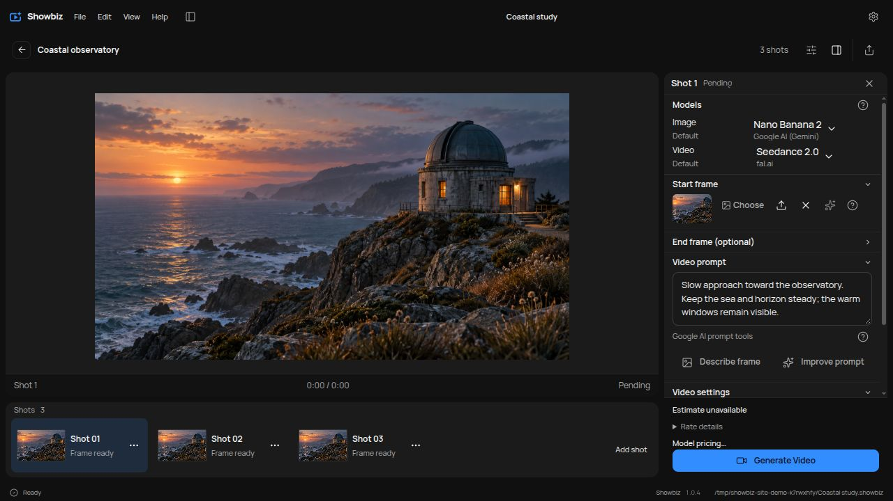
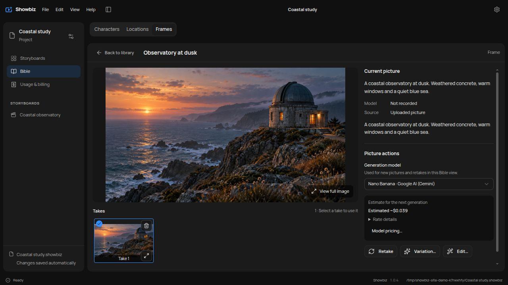

One project file
Create or open a .showbiz file containing the project and its referenced images and videos. Move or share the complete project as one package.
Desktop application
Build a project bible, generate images and video shots, and save the work in one self-contained .showbiz file.
Linux macOS Windows MIT license

Project bible
Keep your references together. Generate or upload pictures, explore variations, and choose the takes to use in your shots.

Create or open a .showbiz file containing the project and its referenced images and videos. Move or share the complete project as one package.
Set storyboard model defaults, then override them per shot. Use prompts, start frames and end frames where the selected model supports them.
Download a storyboard's shots as a ZIP, or export .sbz for Forgecut. Forgecut imports the media into its library without placing it on the timeline.
Generation and automation
Use your own provider credentials, or connect a compatible local image or video server. Available controls depend on the model.
See available cost estimates before generation and track usage in the project. Provider-reported charges appear where supported. Estimates are labelled, and missing final charges remain unknown.
Agents can attach to a running Showbiz instance to inspect and update its open project through MCP. The desktop app and agents work on the same project.
Latest published release
Screenshots show version 1.0.4. Downloads follow the latest published release.
.showbiz file you save. API keys are separate from project files and are currently stored as plaintext in the device's local settings database.